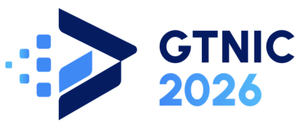
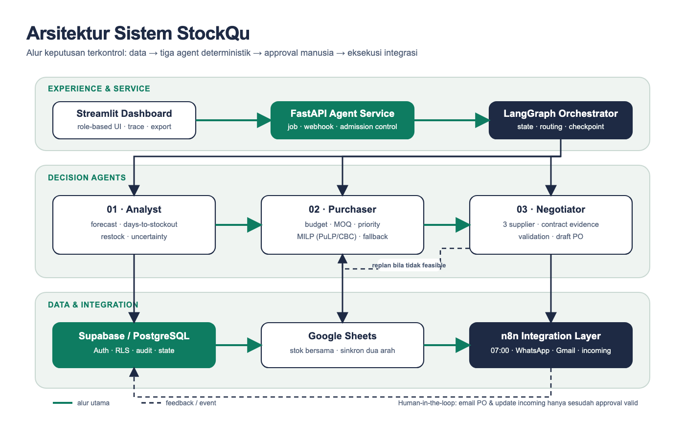
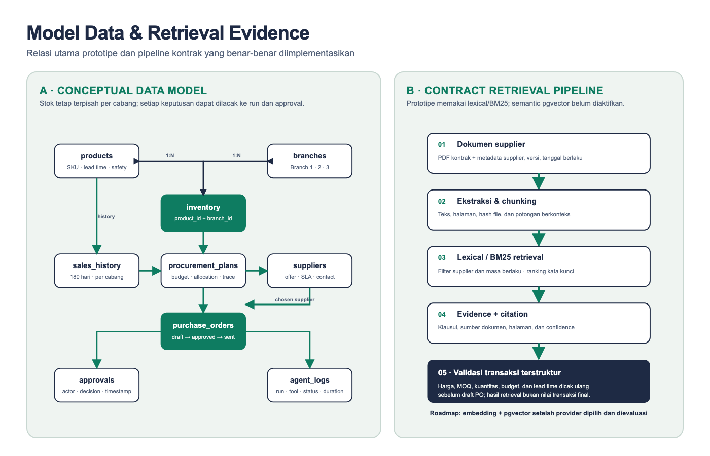
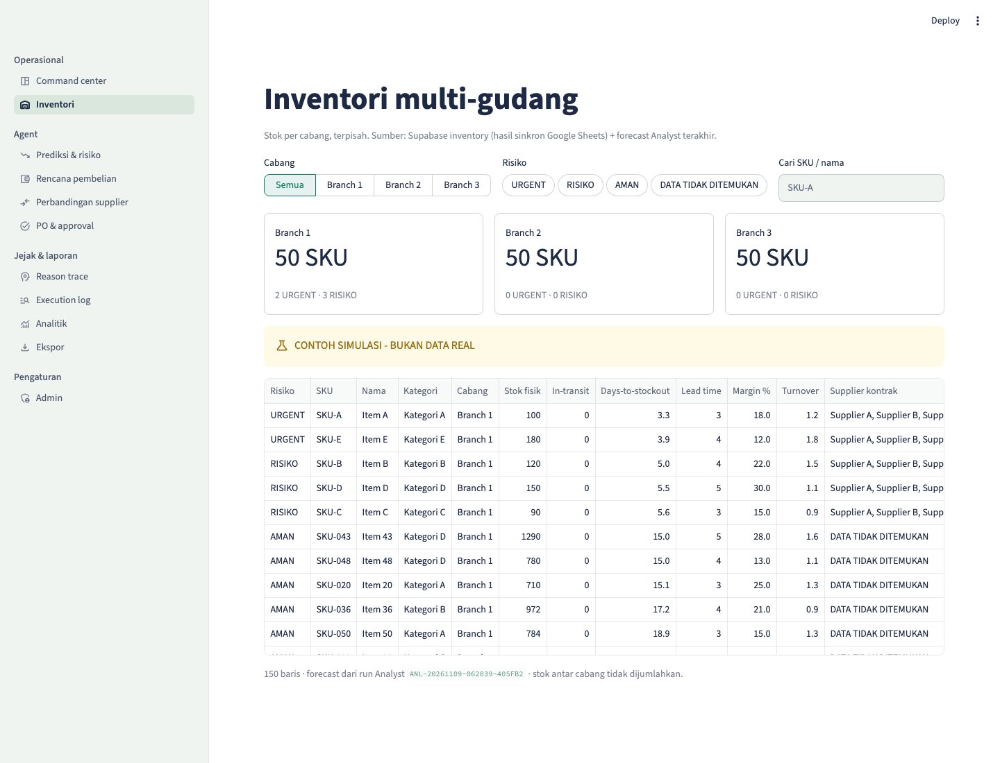
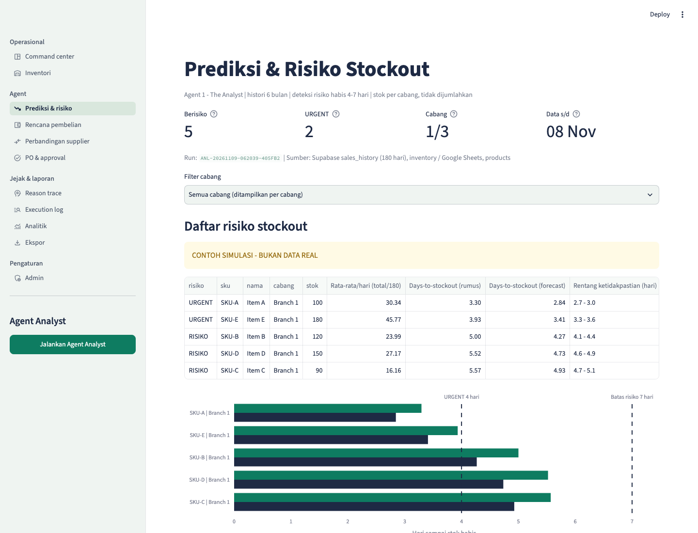
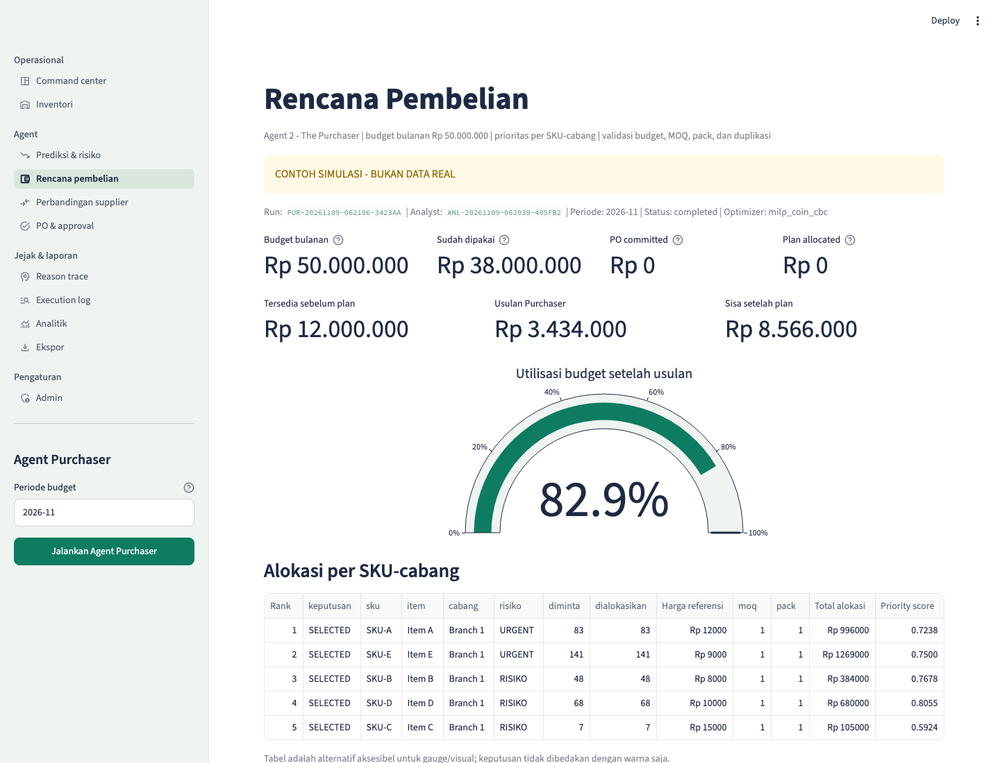
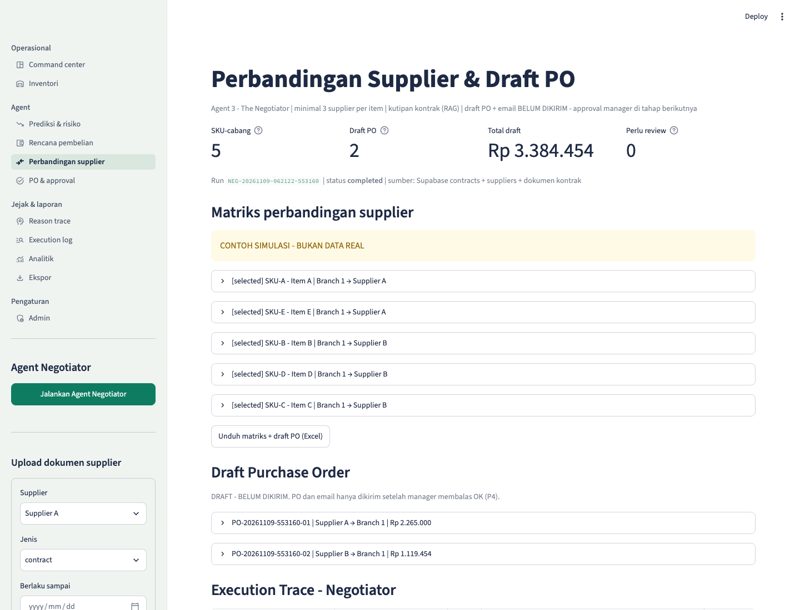
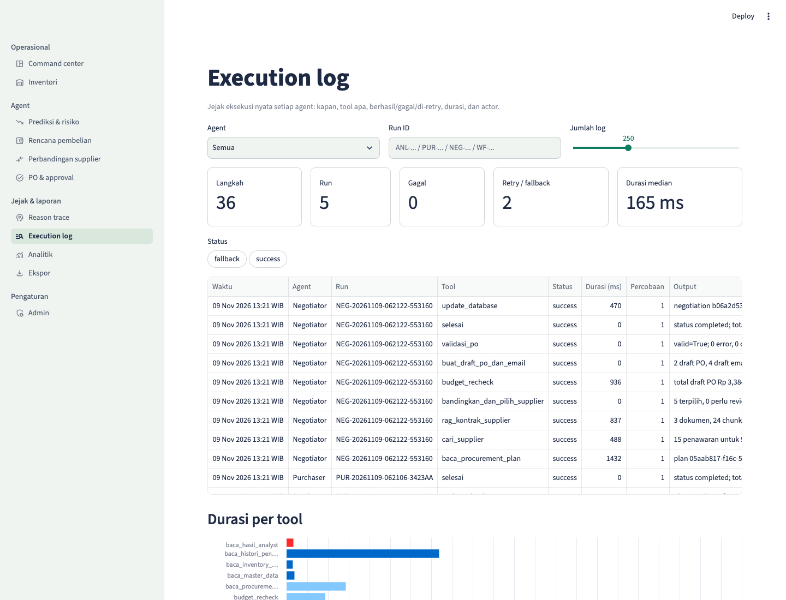
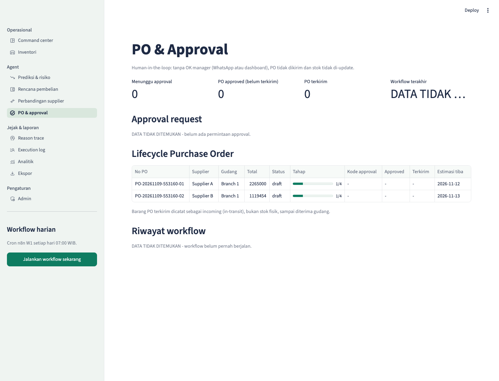

Proposal Karya · Agentic Development Garda Tech National Innovation Competition 2026 Kategori: AI Agent Development

BUILDING INTELLIGENT AI AGENTS FOR ENTERPRISE PRODUCTIVITY
STOCKQU
Multi-Agent Procurement System untuk keputusan stok yang lebih cepat, terukur, dan dapat diaudit.
Disusun oleh tim
Suddenly
Bramantyo Kunni Nurrisqi — Universitas Diponegoro Akmal Fauzan Azima — Universitas Diponegoro Zoe Mohamed — Universitas Diponegoro
STOCKQU01 · Latar Belakang
Masalah industri
Dari data stok yang tersebar menjadi keputusan pengadaan
Pengelolaan persediaan multi-gudang bukan sekadar melihat jumlah stok. Tim harus menentukan kapan membeli, berapa unit, cabang mana yang diprioritaskan, dan supplier mana yang layak—di tengah permintaan yang berubah, anggaran terbatas, serta lead time berbeda.
Masalah inti: data stok, histori penjualan, penawaran, kontrak, dan approval berada pada kanal berbeda. Fragmentasi ini memperlambat tindakan dan menyulitkan audit keputusan.
1.1 Konteks operasional
Dalam skenario StockQu, Google Sheets menjadi sumber stok bersama, Supabase menyimpan data operasional dan audit, sementara evaluasi supplier serta persetujuan PO melibatkan kanal komunikasi terpisah. Tanpa orkestrasi, tim berisiko terlambat mendeteksi stockout, mengikat modal pada overstock, atau memilih supplier tanpa menilai bukti kontrak dan ketepatan pengiriman.
1.2 Rumusan masalah
01Risiko terlambat terlihat
Ambang statis tidak cukup untuk menghubungkan tren permintaan, stok per cabang, dan jadwal kedatangan.
02Budget perlu diprioritaskan
Ketika dana tidak cukup untuk semua SKU, keputusan harus mempertimbangkan urgensi dan dampak bisnis.
03Bukti supplier tersebar
Harga, MOQ, lead time, serta klausul kontrak perlu dibandingkan secara konsisten dan terlacak.
04Keputusan sulit diaudit
Tanpa Reasoning Trace dan Execution Trace, sumber angka, validasi, error, dan approval sulit diperiksa.
STOCKQUBaseline · Tujuan · Manfaat
Baseline tervalidasi pada prototipe
Ruang uji yang terukur, bukan klaim operasional nyata
CONTOH SIMULASI — BUKAN DATA REAL
3
cabang terpisah: Branch 1, Branch 2, Branch 3
50
SKU sintetis pada dataset demonstrasi
150
kombinasi SKU–cabang yang dianalisis
180
hari histori penjualan per kombinasi
Sumber: Supabase prototipe, run Analyst ANL-20261109-062039-405FB2, diakses 10 November 2026. Data seed diberi label simulasi.
2.1 Tujuan pengembangan
Prediksi: mendeteksi risiko habis per SKU dan cabang dari histori enam bulan, stok saat ini, dan ketidakpastian forecast.
Optimasi: menyusun rencana pembelian yang patuh budget Rp50 juta, MOQ, lead time, serta prioritas risiko.
Eksekusi: membandingkan minimal tiga supplier, menyiapkan draft PO, dan menunggu approval manusia.
Transparansi: menyajikan sumber angka, formula, status tool, fallback, dan perubahan state.
2.2 Validasi masalah
Hasil run demonstrasi
5 kombinasi SKU–cabang terdeteksi berisiko dalam horizon ≤7 hari; 2 di antaranya berstatus urgent (≤4 hari).
Yang belum diukur
Baseline waktu kerja manual, kerugian penjualan, dan dampak sebelum–sesudah pada perusahaan nyata belum tersedia; karena itu tidak dijadikan klaim hasil.
2.3 Manfaat yang diharapkan
Procurement Manager memperoleh rencana yang dapat ditinjau; Purchasing Staff mengurangi konsolidasi manual; Warehouse Manager melihat stok dan incoming per cabang; organisasi memperoleh keputusan yang konsisten dan berjejak audit. Manfaat bisnis tetap diposisikan sebagai hipotesis sampai pilot operasional dilakukan.
STOCKQU02 · Solusi & Pengguna
Solusi teknologi
Tiga agent, satu jalur keputusan, satu gerbang persetujuan
StockQu menggabungkan Analyst, Purchaser, dan Negotiator dalam workflow LangGraph. Perhitungan finansial dan stok dijalankan oleh tool Python yang tervalidasi; tindakan eksternal tetap dikunci oleh human-in-the-loop.
ANALYST risiko stok
→
PURCHASER alokasi budget
→
NEGOTIATOR supplier & draft PO
→
MANAGER OK / reject / revisi
2.4 Prinsip solusi
Agentic, tetapi terkontrol
State machine memilih langkah berikutnya, tool menghasilkan output terstruktur, validator menegakkan constraint, dan setiap hasil dapat direplay.
Evidence-grounded
Angka keputusan berasal dari Sheets, Supabase, hasil Analyst, atau kontrak supplier. Retrieval kontrak saat ini memakai lexical/BM25 dengan citation; semantic pgvector masih roadmap.
Human-governed
Tanpa keputusan approval yang valid, PO tidak dikirim melalui email dan incoming inventory tidak diproses.
3. Target pengguna
Peran
Kebutuhan utama
Procurement Manager
Menilai risiko, budget, bukti supplier, lalu approve, reject, atau meminta revisi.
Purchasing Staff
Meninjau prioritas SKU, hasil optimasi, perbandingan supplier, dan draft PO.
Warehouse Manager
Memantau stok serta incoming per cabang dan mengonfirmasi penerimaan.
Super Admin
Mengelola master data, hak akses, integrasi, dan audit log.
Target pasar awal
Distributor, grosir, atau ritel kecil–menengah dengan beberapa gudang dan pola pembelian berulang. Demonstrasi dibatasi pada tiga cabang gudang di Jawa Tengah; belum ada klaim implementasi komersial pada perusahaan nyata.
STOCKQU04 · Fitur & Keunikan
Fitur utama · F-01–F-35
Bukan dashboard pasif— sebuah procurement decision loop
01Inventory intelligence
Sinkronisasi Google Sheets–Supabase, stok terpisah pada tiga cabang, incoming inventory, dan histori penjualan enam bulan.
02Analyst
Forecast tren × musiman, backtest holdout 14 hari, days-to-stockout, safety stock, restock, serta rentang ketidakpastian.
03Purchaser
Prioritas risiko, budget tracking, optimasi MILP PuLP/CBC, MOQ, serta greedy fallback yang tercatat bila solver tidak tersedia.
04Negotiator
Minimal tiga supplier per item, lexical/BM25 contract retrieval dengan citation, validasi quotation, ranking, dan draft PO.
05Orkestrasi & observability
LangGraph state, persistent checkpoint, retry/fallback, Reasoning Trace, Execution Trace, dan audit log tanpa memaparkan chain-of-thought.
06Controlled execution
Approval WhatsApp/dashboard, email PO melalui n8n/Gmail, incoming inventory, serta ekspor PDF/Excel setelah syarat terpenuhi.
4.2 Nilai inovasi
Agent-first
Menghubungkan deteksi, alokasi, supplier, dan draft transaksi—bukan hanya memvisualkan data.
Replanning
Constraint yang tidak terpenuhi dapat mengembalikan proses ke alokasi dan validasi ulang.
Auditable
Run ID, tool, sumber angka, durasi, status, dan keputusan manusia tersimpan sebagai evidence.
4.3 Guardrail keputusan
Risiko
Kontrol StockQu
Tindakan terlarang
Budget berlebih
Recheck budget pada plan dan draft PO
Menerbitkan total di atas sisa budget
Stok lintas cabang tercampur
Key inventory = product_id + branch_id
Menjumlahkan stok sebagai satu gudang
Supplier tidak terverifikasi
≥3 offer + bukti kontrak + validator
Menganggap retrieval sebagai harga final
Eksekusi tanpa izin
Approval valid + idempotency
Mengirim PO atau menambah stok tanpa OK
STOCKQUDemo & Stack Teknologi
4.4 Skenario demonstrasi
Dari risiko stockout menjadi dua draft PO
CONTOH SIMULASI — BUKAN DATA REAL
5
SKU–cabang berisiko dari 150 kombinasi
Rp3,434 jt
rencana Purchaser dari budget tersedia Rp12 jt
3 / item
supplier dibandingkan untuk setiap SKU risiko
Rp3,384 jt
total dua draft PO; belum dikirim
Run Analyst ANL-20261109-062039-405FB2 menemukan lima risiko. Run Purchaser PUR-20261109-062106-3423AA menghasilkan plan feasible dengan solver MILP/CBC. Run Negotiator NEG-20261109-062122-553160 memilih offer tervalidasi dan membuat dua draft PO. Pada snapshot proposal, approval request belum tersedia; status PO tetap draft dan email belum dikirim.
LangGraph — Analyst, Purchaser, Negotiator, branching, checkpoint, dan HITL. Prototipe saat ini tidak mengonfigurasi provider LLM eksternal; keputusan finansial tetap deterministik.
Data
Supabase PostgreSQL — Auth, RLS, inventori, transaksi, run, dan audit; Google Sheets untuk sumber stok bersama.
Forecast & optimasi
Python — linear trend × weekly seasonality, backtest 14 hari; PuLP 3.3.0 + CBC untuk MILP.
Retrieval
Ekstraksi dokumen dan lexical/BM25 dengan citation. pgvector/embedding belum diaktifkan.
Integrasi
n8n W1–W5, Gmail, Twilio WhatsApp Sandbox, Google Sheets, dan cron 07:00 WIB.
Dokumen
fpdf2, pypdf, XlsxWriter untuk draft PO, matriks supplier, dan laporan.
STOCKQU05 · Arsitektur Sistem
5.2 Multi-agent architecture
Alur terpisah, state bersama, eksekusi tetap terkunci
Streamlit meminta eksekusi ke FastAPI Agent Service. LangGraph meneruskan state ke tiga agent; setiap agent memanggil tool terstruktur dan menyimpan trace. Supabase menjadi sumber state dan audit, Google Sheets menjadi kanal stok bersama, sedangkan n8n menangani scheduler dan komunikasi eksternal.

Gambar 1. Arsitektur sistem StockQu. Garis putus-putus menandai feedback/event; tindakan eksternal hanya berjalan setelah approval valid.
Conditional workflow
Data kurang → fallback tercatat. Plan melanggar budget → hitung ulang. Offer tidak feasible → replan. Approval belum ada → workflow berhenti pada draft.
Deployment boundary
UI hanya memakai anon/JWT user sesuai RLS. Service role, token n8n, kredensial Sheets, dan callback tetap berada di sisi server.
STOCKQUDatabase & Retrieval
5.3 Data model
Stok per cabang, evidence per keputusan
Relasi inti menjaga stok pada key SKU–cabang, menghubungkan histori ke plan, supplier ke PO, serta PO ke approval dan agent log. Dokumen kontrak diproses sebagai evidence; angka transaksi tetap diverifikasi pada tabel terstruktur.

Gambar 2. Model data konseptual dan pipeline retrieval yang aktual. Diagram sengaja tidak mengklaim pgvector aktif; semantic retrieval menjadi roadmap setelah provider embedding dipilih dan diuji.
Aturan traceability: setiap angka pada Reasoning Trace harus dapat ditelusuri ke Google Sheets, Supabase, hasil Analyst, atau kontrak supplier. Jika bukti tidak tersedia, UI menampilkan DATA TIDAK DITEMUKAN.
MILP mengalokasikan kuantitas di bawah sisa budget Rp50 juta, MOQ, dan prioritas risiko. Greedy fallback hanya dipakai bila solver gagal dan selalu dicatat.
03 · Negotiator
Membandingkan minimal tiga offer, mengambil evidence kontrak, menilai harga/lead time, lalu membuat draft PO dan recheck budget.
5.5 Tool calling dan error recovery
Tahap
Tool utama
Validasi / recovery
Analyst
baca inventory, sales history, forecasting
180 hari; per cabang; baseline mean bila tren tidak lebih baik
Purchaser
baca forecast, budget, optimize procurement
budget recheck; timeout; greedy fallback yang auditable
Negotiator
supplier search, contract retrieval, draft PO
≥3 supplier; citation; MOQ/price/lead-time; PO validator
Execution
approval request, email PO, incoming sync
auth actor; idempotency; signature/webhook; no approval = stop
Run ID, agent, tool, parameter aman, status, percobaan, durasi, ringkasan output, serta retry/fallback.
State dan kegagalan
Checkpoint PostgreSQL memungkinkan proses dilanjutkan setelah event approval. Kegagalan provider yang aman dapat di-retry terbatas; error non-retryable berhenti dengan pesan eksplisit. Pengiriman PO dan keputusan approval dirancang idempotent agar webhook atau retry tidak membuat transaksi ganda.
STOCKQUHITL & Evaluasi
5.7 Human-in-the-loop
Approval bukan formalitas— ia adalah batas transaksi
n8n menjalankan cron, WhatsApp Sandbox, Gmail, dan sinkron incoming; LangGraph tetap memegang state keputusan. Backend memverifikasi actor, approval code, status, dan idempotency. Balasan “OK” tanpa identitas dan konteks yang valid tidak cukup untuk mengeksekusi PO.
DRAFT PO
→
WA / DASHBOARD
→
APPROVAL VALID
→
EMAIL + INCOMING
HASIL BACKTEST DAN RUN PROTOTIPE — BUKAN HASIL OPERASI PERUSAHAAN
5.8 Hasil evaluasi yang tersedia
Metrik
Hasil
Basis & sampel
Forecast accuracy
MAPE median 7,9%; baseline 10,0%
Backtest holdout 14 hari; 150 SKU–cabang pada run Analyst terbaru
Stockout-risk detection
5 risiko, 2 urgent
Aturan ≤7 hari dan ≤4 hari; belum dibandingkan dengan label kasus nyata
Budget feasibility
1/1 plan demo feasible
Plan Rp3,434 juta; budget total Rp50 juta; tersedia pra-plan Rp12 juta
0 approval request; 2 PO masih draft; tidak diklaim selesai
Formula evaluasi
MAPE dihitung per seri pada holdout, lalu diringkas dengan median untuk 150 SKU–cabang. Tool handled rate = (success + retried + fallback + skipped) / tool call. Feasibility = plan yang memenuhi seluruh constraint / plan diuji.
Yang masih perlu pilot
Procurement cycle time vs manual, approval latency, lost margin avoided, waktu kerja dihemat, serta pengurangan stockout/dead stock pada data nyata.
Snapshot bukti: Supabase prototipe, 10 November 2026. Pengukuran menghormati pemisahan stok per cabang.
STOCKQU06 · Batasan Sistem
Batas implementasi
Prototipe yang jujur lebih dapat diuji
StockQu belum diposisikan sebagai ERP produksi. Ruang demonstrasi dibatasi pada tiga cabang, data sintetis enam bulan, budget bulanan, supplier yang tersedia, approval manusia, dan draft PO.
01Data sintetis
Belum ada validasi pada pola penjualan perusahaan nyata. SKU baru, data jarang, atau demand berubah mendadak dapat menurunkan akurasi.
02Retrieval lexical
Semantic pgvector dan embedding belum aktif. Bukti kontrak dicari via lexical/BM25 dan selalu diverifikasi terhadap data terstruktur.
03Supplier terbatas
Tidak semua supplier menyediakan API atau quotation terbaru. Informasi yang belum terverifikasi tidak diperlakukan sebagai harga final.
04WhatsApp Sandbox
Nomor penguji harus terdaftar dan tunduk pada Twilio. Dashboard terautentikasi tetap menjadi jalur approval utama/fallback.
05Deployment publik
Live Streamlit dan backend persisten belum dicantumkan karena URL publik final belum tersedia di repository.
06Batas otomasi
Agent tidak membayar supplier dan tidak menambah on-hand stock dari approval. Stok fisik berubah setelah goods receipt diverifikasi.
Mitigasi desain
Batasan
Mitigasi saat ini
Langkah berikutnya
Akurasi forecast
Backtest per SKU–cabang; baseline fallback; uncertainty range
Pilot dengan data berizin dan rolling evaluation
Keamanan transaksi
RLS, role, server secrets, approval, idempotency, audit log
Secret manager, rotation, staging, dan pen-test deployment
Ketersediaan integrasi
Retry terbatas, fallback, dan status eksplisit
Queue, monitoring, alerting, serta SLA konektor
Dampak bisnis
Tidak mengklaim hasil yang belum diukur
Studi sebelum–sesudah dengan baseline sebanding
Status submission: seluruh screenshot berikut berasal dari aplikasi yang dijalankan terhadap Supabase prototipe. Data ditandai simulasi, dan tidak ada token, password, service role, email pribadi, atau nomor telepon yang ditampilkan.
STOCKQU07 · Screenshot Antarmuka
Bukti implementasi · 1/3
Inventory dan Analyst
CONTOH SIMULASI — BUKAN DATA REAL
03 Streamlit Inventory Overview

Tiga cabang dan 150 kombinasi SKU–cabang dibaca dari Supabase; stok tetap dipisah per cabang. UI menunjukkan run Analyst yang menjadi sumber status risiko.
04 Agent Analyst — Forecast & Stockout Risk

Snapshot run Analyst menampilkan lima risiko, dua urgent, formula stok, forecast, rentang uncertainty, dan sumber histori 180 hari.
STOCKQU07 · Screenshot Antarmuka
Bukti implementasi · 2/3
Purchaser dan Negotiator
CONTOH SIMULASI — BUKAN DATA REAL
05 Agent Purchaser — Budget Optimization

Budget total Rp50 juta, used Rp38 juta, tersedia Rp12 juta; MILP/CBC mengalokasikan lima item sebesar Rp3,434 juta.
06 Agent Negotiator — Supplier Comparison & Draft PO

Lima SKU dibandingkan terhadap minimal tiga supplier per item. Hasil run berupa dua draft PO senilai Rp3,384 juta; email belum dikirim.
STOCKQU07 · Screenshot Antarmuka
Bukti implementasi · 3/3
Execution Trace dan Approval
CONTOH SIMULASI — BUKAN DATA REAL
07 Agent Execution Trace & Recovery

Execution Log memperlihatkan urutan agent/tool, run ID, status, percobaan, durasi, dan ringkasan output yang aman untuk audit.
08 Approval & PO Lifecycle

Pada snapshot ini belum ada approval request: dua PO tetap draft pada tahap 1/4. Kondisi ini membuktikan guardrail—tanpa approval, PO tidak dikirim dan stok tidak berubah.
STOCKQU08–09 · Future & Lampiran
Rencana pengembangan
Dari prototipe terukur menuju pilot yang bertanggung jawab
8.1 Tahap berikutnya
Pilot terbatas dengan data operasional yang berizin dan baseline sebelum–sesudah.
Semantic retrieval pgvector setelah provider embedding dipilih, dievaluasi, dan diberi guardrail.
Model demand intermittent, rolling backtest, dan monitoring drift.
Integrasi ERP/POS, queue, observability, SLA konektor, serta goods receipt terverifikasi.
Evaluasi supplier dari SLA aktual dan pelacakan delivery end-to-end.
8.2 Kriteria kesiapan pilot
Deployment HTTPS persisten · secrets server-side · RLS teruji · n8n production workflows aktif · approval E2E · monitoring · backup · rollback · test data terpisah.
9. Tautan penting
Repository kode & README github.com/akmalscript/stockqu Remote tersedia, tetapi URL publik mengembalikan 404 tanpa login saat diverifikasi 10 Nov 2026.
AKSES TERBATAS
Live Streamlit demo Belum dipublikasikan pada saat finalisasi PDF.
BELUM PUBLIK
Video demo 3–5 menit Tautan publik belum tersedia di repository.
Surat keaslian Disiapkan dan diunggah sebagai berkas terpisah sesuai portal panitia.
BERKAS TERPISAH
Checklist final pengumpulan
PDF A4, 15 halaman, tanpa bagian kosong.
Nama tim dan anggota sudah lengkap.
Screenshot berasal dari aplikasi.
Data simulasi diberi label eksplisit.
Angka memiliki run ID dan sumber.
Tidak ada secret atau data pribadi.
Link publik diuji sebelum upload.
Surat keaslian diunggah terpisah.
Catatan submission: sebelum mengirim, tim masih perlu mengganti status live demo dan video hanya jika URL publik final benar-benar tersedia dan dapat dibuka tanpa izin khusus.